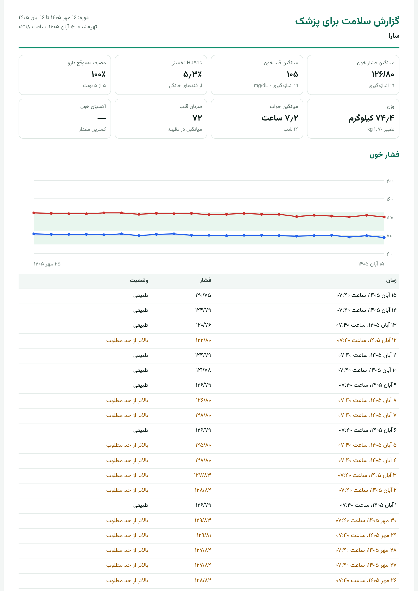
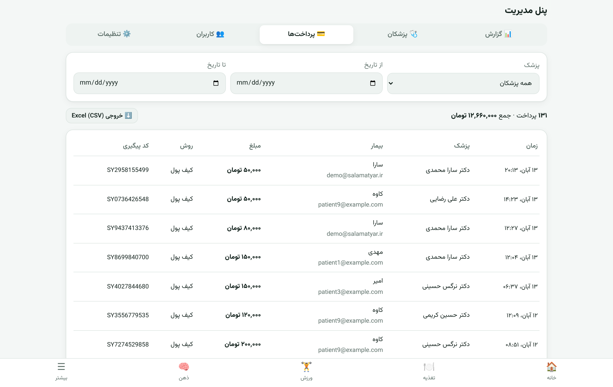
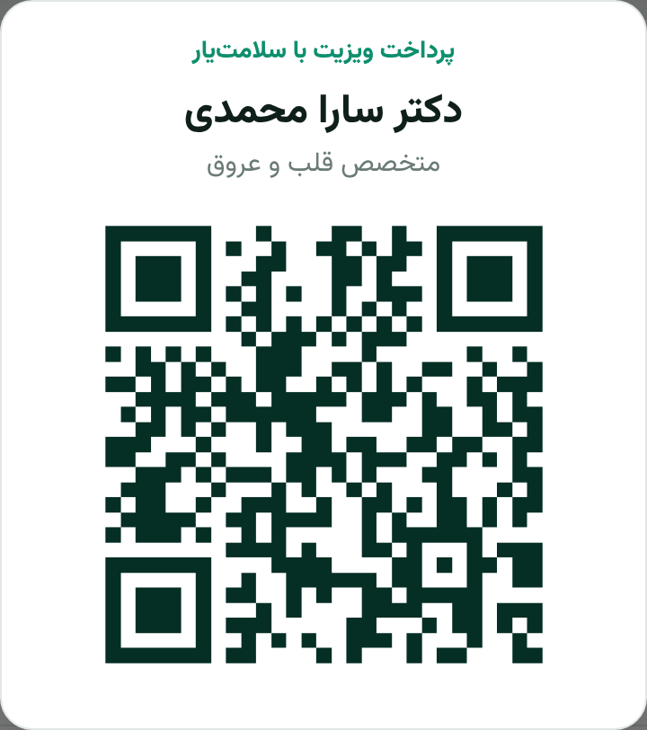

سلامتیار هوشمند
کاتالوگ محصول · نسخه ۳٫۰
Salamat AI — Product Catalog
یک اپ، پانزده دستیار سلامت
با هوش مصنوعی
تغذیه، ورزش، خواب، پوست، رادیولوژی قفسه سینه، آزمایش، سلامت روان، علائم حیاتی، دارو، ثبت صوتی، خواندن با صدا، همراهی خانواده، گزارش برای پزشک، سلامت بانوان و ضربان با دوربین؛ همه در یک محصول فارسی، آماده استقرار روی سرور شما و قابل عرضه با برند شما.
اندرویدiOSوب و PWAهوش مصنوعی روی گوشیمیزبانی داخلیثبت صوتی فارسیحالت سالمندهمراهی خانوادهتقویم شمسیپرداخت ویزیت با QRپنل مدیریتWhite-label
سلامتیار هوشمندخلاصه مدیریتی
خلاصه مدیریتی
مراقبت روزانه از سلامت، ساده و هوشمند
سلامتیار یک پلتفرم کامل سلامت دیجیتال است که با چند مدل هوش مصنوعی کوچک و کارآمد، کارهای روزمره مراقبت از سلامت را برای کاربر ساده میکند: با یک عکس کالری غذا (حتی غذای ایرانی) را میشمارد، فشار و قند و غذا را با صدای کاربر ثبت میکند، متنها را برای سالمندان با صدا میخواند، عکس رادیولوژی قفسه سینه را غربالگری میکند، حرکات ورزشی را با دوربین تصحیح میکند، خواب را از روی صدا تحلیل میکند و برگه آزمایش را به زبان ساده توضیح میدهد.
محصول آماده است، نه یک ایده: نسخه عملیاتی با سرور، اپ موبایل و نسخه وب، تستشده و قابل استقرار در یک روز.
۱۵ماژول سلامت
۴پلتفرم از یک کد
۹+۱مدل هوش مصنوعی
(+ مدل زبانی اختیاری)
۱۰۰٪فارسی و راستبهچپ
🎯
برای چه کسانی؟
بیمهها، کلینیکها و بیمارستانها، داروخانههای زنجیرهای، سازمانها (برنامه سلامت کارکنان)، اپراتورها و سوپراپها، و استارتاپهایی که میخواهند سریع وارد بازار سلامت دیجیتال شوند.
💎
چه چیزی خریداری میکنید؟
کد کامل و مالکیت استقرار، اپ اندروید و iOS و وب با برند شما، پرداخت ویزیت با QR و کیف پول، پنل مدیریت، سرور قابل نصب روی زیرساخت داخلی و مستندات استقرار.
⚡
چرا الان؟
مدلهای هوش مصنوعی آنقدر کوچک شدهاند که روی گوشی و سرورهای ارزان اجرا میشوند؛ هزینهای که چند سال پیش فقط برای غولهای فناوری ممکن بود، امروز برای یک کسبوکار متوسط در دسترس است.
🛡️
چرا سلامتیار؟
فارسیِ کامل با جدول غذاهای ایرانی، حریم خصوصی واقعی (تصویر و صدا ذخیره نمیشود)، اجرای کامل روی سرور داخل کشور و ادامه کار حتی در اختلال اینترنت بینالملل.
سلامتیار هوشمند · کاتالوگ محصول۲
سلامتیار هوشمندمسئله و فرصت
مسئله و فرصت
مراقبت از سلامت، در فاصله دو ویزیت پزشک اتفاق میافتد
بیشتر تصمیمهای مؤثر بر سلامت (چه بخوریم، چقدر بخوابیم، دارو را بهموقع بخوریم یا نه) بیرون از مطب گرفته میشود. بیماریهای غیرواگیر مانند دیابت، فشار خون و بیماریهای قلبی، به گزارش سازمان جهانی بهداشت، عامل حدود ۷۴٪ مرگها در جهان هستند و بخش بزرگی از آنها به سبک زندگی وابسته است.
🧩
اپهای پراکنده
کاربر برای کالری، ورزش، خواب و دارو چند اپ جدا نصب میکند و هیچکدام تصویر کامل را نمیبینند.
🌐
اپهای خارجی
فارسی نیستند، غذای ایرانی را نمیشناسند، پرداخت و دسترسی دشوار است و دادهها خارج از کشور ذخیره میشود.
⏱️
ثبت دستی خستهکننده
تایپ کردن هر وعده و هر عدد باعث میشود کاربر بعد از چند روز رها کند. هوش مصنوعی این اصطکاک را حذف میکند.
فرصت
سازمانهایی که با سلامت مردم سروکار دارند (بیمه، کلینیک، داروخانه، کارفرما) به یک ابزار دیجیتال نیاز دارند که مشتری را بین مراجعهها همراهی کند، داده قابلاعتماد بسازد و هزینههای درمان را با پیشگیری کاهش دهد. سلامتیار همین ابزار است، آماده و فارسی.
آنچه کاربر به دست میآورد
- یک دستیار همیشه همراه به زبان خودش
- ثبت سریع با عکس بهجای تایپ
- هشدار بهموقع برای فشار، قند و اکسیژن خون
- یادآور دارو و گزارش مصرف بهموقع
- حمایت در لحظات سخت روانی، با ارجاع به خطوط کمک
آنچه سازمان شما به دست میآورد
- ارتباط روزانه با مشتری، نه سالی یک بار
- برند خودتان روی اپ (White-label)
- دادههای سلامت روی سرور خودتان
- زمینه برنامههای پیشگیری و تشویقی
- ورود سریع به بازار، بدون ماهها توسعه
منبع آمار: سازمان جهانی بهداشت (WHO)، برگه اطلاعات بیماریهای غیرواگیر۳
سلامتیار هوشمندمحصول در یک نگاه
محصول در یک نگاه
هشت ماژول پایه، یک تجربه یکپارچه
همه ماژولها در یک داشبورد مشترک جمع میشوند. هفت ماژول تازه در صفحههای ۶، ۷ و ۱۳ تا ۱۵ آمدهاند.
🍽️
تغذیه با عکس
عکس غذا ← تشخیص و کالری و درشتمغذیها. غذاهای ایرانی مثل قورمهسبزی، کباب، تهچین و آش را هم از روی عکس میشناسد.
هوش مصنوعی سرور
🏋️
مربی ورزش با دوربین
شمارش خودکار تکرار و تذکر فرم حرکت برای اسکوات، شنا، لانج، جامپینگ جک و دراز و نشست.
هوش مصنوعی روی گوشی
😴
پایش خواب
تشخیص خروپف، سرفه و رویدادهای تنفسی از روی صدا، امتیاز خواب و توصیه. آمار حتی با بسته شدن اپ از دست نمیرود.
هوش مصنوعی روی گوشی
🩺
غربالگری پوست و خال
بررسی تصویر ضایعه در ۹ دسته و تعیین سطح ریسک با توصیه مراجعه. ابزار غربالگری، نه تشخیص.
هوش مصنوعی سرور
🧪
تفسیر برگه آزمایش
خواندن خودکار برگه از روی عکس و توضیح بیش از ۲۰ شاخص رایج (قند، چربی، CBC، تیروئید، ویتامینها) به فارسی ساده.
هوش مصنوعی سرور
🧠
سلامت روان
یادداشت روزانه با تحلیل احساس، گفتگو با دستیار، تمرین تنفس و تشخیص خودکار جملات بحرانی با ارجاع به ۱۲۳ و ۱۴۸۰.
هوش مصنوعی سرور
❤️
علائم حیاتی
فشار، قند، وزن، ضربان و اکسیژن خون؛ هشدار بالینی، تشخیص مقدار غیرعادی و تحلیل روند هفتگی.
تحلیل آماری
💊
دارو و یادآور
یادآور ساعت مصرف (با اعلان، حتی با اپ بسته روی موبایل) و درصد مصرف بهموقع در هفته.
روی گوشی + سرور
سلامتیار هوشمند · کاتالوگ محصول۴
سلامتیار هوشمندتجربه کاربری
داشبورد
همهچیز در یک صفحه
کاربر با باز کردن اپ میبیند امروز چقدر خورده، دیشب چطور خوابیده، فشارش چند بوده و داروهایش را بهموقع خورده یا نه. هر کارت او را مستقیم به ماژول مربوط میبرد.
- طراحی تازه و حرفهای: آیکونهای یکدست، کارتهای رنگی و نوار پایین با دکمه ثبت صوتی
- طراحی بومی فارسی، راستبهچپ و اعداد فارسی
- حالت روشن و تیره، خودکار مطابق گوشی؛ حالت سالمند با متن و دکمههای بزرگ
- هشدار قرمز بالای صفحه در وضعیتهای خطرناک (مثل بحران فشار خون)
- قابل نصب روی صفحه اصلی گوشی حتی بدون مارکت (PWA)
- رنگ، لوگو و نام اپ قابل تغییر به برند شما
یک کد، چهار پلتفرم
اپ اندروید، اپ iOS، نسخه وب و نسخه نصبشدنی روی صفحه گوشی همه از یک کد ساخته میشوند؛ هر قابلیت جدید یک بار نوشته میشود و همهجا میرسد.
تصاویر از نسخه واقعی محصول با داده نمایشی۵
سلامتیار هوشمندصدا و دسترسیپذیری
جدید · ثبت صوتی و خواندن با صدا
بگویید، ثبت میشود؛ بپرسید، خوانده میشود
کاربر دکمه میکروفون را میزند و به فارسی میگوید «فشارم ۱۳۰ روی ۸۵ بود، ناهار قورمهسبزی خوردم». سامانه متن را مینویسد، فشار خون و وعده غذا را جدا میکند و بعد از تأیید کاربر ثبت میکند.
- تشخیص گفتار فارسی روی سرور خودتان، بدون سرویس خارجی
- فهم عددهای گفتاری («صد و سی روی هشتاد») و نام غذاهای ایرانی
- فشار، قند، وزن، ضربان، اکسیژن، غذا و یادداشت حال در یک جمله
- متن قابل ویرایش و تأیید قبل از ثبت؛ هیچ عددی بیاجازه ذخیره نمیشود
- دکمه «بخوان» با صدای فارسی طبیعی: خلاصه روز، داروها، نتیجه آزمایش، پاسخ دستیار و رسید پرداخت
- حالت سالمند: متن، دکمهها و نوار پایین بزرگتر، سرعت خواندن قابل تنظیم
چرا مهم است؟
بیماران مزمن (فشار، دیابت) بیشتر سالمندند و تایپ برایشان سخت است. ثبت با صدا و شنیدن نتایج، استفاده روزانه را برای این گروه ممکن میکند.
تصاویر از نسخه واقعی محصول با داده نمایشی۶
سلامتیار هوشمندرادیولوژی قفسه سینه
جدید · غربالگری رادیولوژی
نگاه دوم به عکس قفسه سینه، در چند ثانیه
از فیلم رادیولوژی روی نگاتوسکوپ یا فایل دیجیتال عکس گرفته میشود. مدل ۱۸ یافته رایج (مانند بزرگی قلب، پنومونی، افیوژن، پنوموتوراکس، توده و ندول) را بررسی میکند و سطح اولویت را نشان میدهد.
- سه سطح روشن: یافته قابلتوجهی نیست / نیاز به بررسی پزشک / مراجعه زودتر
- احتمال هر یافته با نوار رنگی و برچسب فارسی
- یافتههای فوری (مثل پنوموتوراکس) جداگانه علامتگذاری میشوند
- سابقه بررسیها برای پیگیری؛ خود عکس ذخیره نمیشود
- نتیجه با صدا هم خوانده میشود
جایگاه بالینی
مدل روی دادههای بزرگ رادیولوژی آموزش دیده است. ابزار کمکی و غربالگری است و جای گزارش رادیولوژیست را نمیگیرد؛ برای استفاده بالینی گسترده، اعتبارسنجی با داده محلی و نظارت پزشک لازم است.
تصاویر از نسخه واقعی محصول با داده نمایشی۷
سلامتیار هوشمندماژول تغذیه
تغذیه هوشمند
یک عکس، بهجای ده دقیقه تایپ
کاربر از بشقابش عکس میگیرد؛ هوش مصنوعی غذا را تشخیص میدهد و چند پیشنهاد با درصد اطمینان نشان میدهد. کاربر با یک لمس تأیید میکند و مقدار را تنظیم میکند.
- کالری، پروتئین، کربوهیدرات و چربی هر وعده
- شناخت غذای ایرانی از روی عکس: چلوکباب، قورمهسبزی، قیمه، فسنجان، تهچین، آش، نان سنگک و بربری و…
- هدف کالری روزانه شخصی و نوار پیشرفت
- جستجوی سریع وقتی عکس در دسترس نیست
- عکس فقط پردازش میشود و هرگز ذخیره نمیشود
مخصوص سفره ایرانی
برخلاف اپهای خارجی، غذاهای ایرانی را میشناسد و عکسهایی را که غذا نیستند (مثل سلفی یا برگه) کنار میگذارد تا کالری اشتباه ثبت نشود.
سلامتیار هوشمند · کاتالوگ محصول۸
سلامتیار هوشمندورزش و خواب
ورزش و خواب، با هوش مصنوعی روی گوشی
مربی و پایشگر شخصی، بدون ارسال حتی یک فریم
🏋️ مربی ورزش
- ۳۳ نقطه بدن در هر فریم
- شمارش خودکار تکرار
- تذکر لحظهای فرم: «سینه را بالا نگه دار»
- امتیاز فرم و کالری هر جلسه
- ۵ حرکت پایه، قابل افزایش
😴 پایش خواب
- تشخیص خروپف، سرفه و تنفس نامنظم
- امتیاز خواب ۰ تا ۱۰۰
- توصیه، از جمله هشدار احتمال آپنه
- ذخیره خودکار هر دقیقه؛ بدون از دست رفتن داده
- صدا ضبط یا ارسال نمیشود
چرا روی گوشی؟
ویدیو و صدای زنده، حجم و حساسیت بالایی دارند. تشخیص حرکات بدن و تشخیص صداها مستقیم روی خود گوشی انجام میشود. نتیجه: پاسخ لحظهای، کار بدون اینترنت، هزینه سرور نزدیک به صفر و حریم خصوصی کامل. فقط آمار نهایی (تعداد تکرار، دقیقه خروپف) به سرور میرود.
سلامتیار هوشمند · کاتالوگ محصول۹
سلامتیار هوشمندپوست و آزمایش
غربالگری و تفسیر
از خال مشکوک تا برگه آزمایش
🩺 غربالگری پوست
- تحلیل در ۹ دسته ضایعه پوستی
- سه سطح: ریسک پایین، نیاز به بررسی، مراجعه به پزشک
- رویکرد محتاطانه؛ اولویت با ارجاع
- سابقه بررسیها برای پایش تغییرات
🧪 تفسیر برگه آزمایش
- عکس برگه ← خواندن خودکار
- بیش از ۲۰ شاخص: قند، HbA1c، چربیها، CBC، TSH، ویتامین D و B12، کبد، کلیه
- وضعیت بالا/پایین/طبیعی و توضیح فارسی
- امکان تایپ دستی نتایج
ارزش برای کلینیک
بیمار قبل از ویزیت، نتایج و پرسشهایش را آماده دارد؛ زمان ویزیت مؤثرتر میشود.
ارزش برای بیمه
غربالگری زودهنگام یعنی تشخیص زودتر و درمان کمهزینهتر.
ایمنی بالینی
هر خروجی پزشکی با توضیح «غربالگری، نه تشخیص» همراه است و کاربر را به پزشک ارجاع میدهد.
سلامتیار هوشمند · کاتالوگ محصول۱۰
سلامتیار هوشمندسلامت روان
سلامت روان
همدلی، هر وقت که لازم است
کاربر حالش را با یک ایموجی و چند جمله ثبت میکند. سیستم احساسات غالب (اضطراب، خستگی، غم، شادی…) را تشخیص میدهد، بازخورد همدلانه و یک تمرین عملی پیشنهاد میکند.
- تحلیل احساس فارسی و انگلیسی
- نمودار حال در طول زمان
- گفتگو با دستیار سلامت (خواب، تغذیه، استرس)
- تمرین تنفس ۴-۷-۸ با راهنمای بصری
- تشخیص خودکار جملات بحرانی و نمایش فوری خطوط کمک ۱۲۳، ۱۴۸۰ و ۱۱۵
قابل ارتقا با مدل زبانی
دستیار بهصورت پیشفرض با پاسخهای کنترلشده کار میکند و با فعالسازی مدل زبانی، گفتگوی آزاد و طبیعیتر روی همان سرور فراهم میشود.
سلامتیار هوشمند · کاتالوگ محصول۱۱
سلامتیار هوشمندبیماریهای مزمن
مدیریت بیماریهای مزمن
همراه هر روز بیماران فشار خون و دیابت
ثبت فشار، قند، وزن، ضربان و اکسیژن خون با هشدار بالینی فوری. سیستم الگوی شخصی هر کاربر را یاد میگیرد و مقدارهای غیرعادی را علامت میزند.
- طبقهبندی فشار خون بر اساس راهنماهای بالینی
- هشدار افت قند و بحران فشار با راهنمای اقدام
- تشخیص مقدار غیرعادی نسبت به الگوی خود فرد
- تحلیل روند: «روند کاهشی: حدود ۴٫۱ واحد در هفته»
- یادآور دارو با درصد مصرف بهموقع
ارزش برای بیمه و کلینیک
پایبندی به مصرف دارو و پایش منظم، دو عامل کلیدی کنترل دیابت و فشار خون هستند؛ سلامتیار هر دو را قابلاندازهگیری میکند.
سلامتیار هوشمند · کاتالوگ محصول۱۲
سلامتیار هوشمندخانواده و همراه
جدید · همراهی خانواده
نگرانی فرزندان، از راه دور برطرف میشود
بیمار یک کد ششحرفی میسازد و برای فرزند، همسر یا پرستار میفرستد. از آن لحظه، همراه در اپ خودش میبیند داروی کدام نوبت جا مانده، کدام فشار یا قند در محدوده خطر بوده و کدام دارو رو به اتمام است.
موجودی و یادآور خرید دارو
- هشدار فراموشی دارو، یک ساعت بعد از زمان مصرف
- هشدار فشار یا قند خطرناک با راهنمای اقدام
- چند همراه برای هر بیمار و چند بیمار برای هر همراه
- شمارش خودکار موجودی دارو با هر نوبت مصرف
- یادآور تهیه دارو پنج روز قبل از تمام شدن
- حریم خصوصی: یادداشتها و عکسها خصوصی میمانند و بیمار هر زمان همراه را حذف میکند
ارزش برای سالمندان و بیماران مزمن
بیشترِ بیماران فشار خون و دیابت سالمندند و فراموشی دارو شایعترین علت کنترل نشدن بیماری است. همراهی خانواده، این حلقه گمشده را بدون نیاز به دستگاه یا هزینه اضافه کامل میکند.
تصاویر از نسخه واقعی محصول با داده نمایشی۱۳
سلامتیار هوشمندگزارش برای پزشک
جدید · گزارش آماده برای ویزیت
یک ماه داده، در یک صفحه روی میز پزشک
بیمار با یک لمس، گزارش ۳۰ روز یا ۳ ماه اخیر را میسازد و لینکش را برای پزشک میفرستد یا چاپ میکند. پزشک بدون نصب اپ و بدون حساب کاربری، گزارش را میبیند.
گزارش سلامت · قابل چاپ و PDF

HbA1c تخمینی از قندهای خانگی
- میانگین و نمودار فشار خون و قند خون، با محدوده هدف
- اندازهگیریهای خطر و بالاتر از حد مطلوب با رنگ مشخص
- داروها، ساعت مصرف و درصد مصرف بهموقع هر دارو
- HbA1c تخمینی، وزن، خواب، ضربان و آخرین آزمایش
- همه تاریخها به تقویم شمسی
- لینک فقطخواندنی، با اعتبار ۷ روز؛ ورود به حساب با آن ممکن نیست
تصاویر از نسخه واقعی محصول با داده نمایشی۱۴
سلامتیار هوشمندسلامت بانوان و ضربان قلب
جدید · بدون دستگاه اضافه
تقویم بانوان و ضربان قلب، فقط با گوشی
🌸 سلامت بانوان
- تقویم شمسی با روزهای پریود، پیشبینی و باروری
- پیشبینی پریود بعدی از روی چرخههای خود فرد
- تشخیص چرخه نامنظم و هشدار تأخیر
- ثبت میزان خونریزی و علائم
- کاملاً خصوصی؛ برای همراهان نمایش داده نمیشود
💓 ضربان قلب با دوربین
- نوک انگشت روی دوربین پشت گوشی، ۲۵ ثانیه
- روشن شدن خودکار فلاش در گوشیهای پشتیبانیشده
- نمایش موج ضربان و کیفیت سیگنال
- رد خودکار اندازهگیریهای نامطمئن
- ثبت مستقیم در علائم حیاتی و گزارش پزشک
دقیق، در عین سادگی
در آزمون با سیگنال شبیهسازیشده، ضربان بین ۵۲ تا ۱۴۰ با خطای کمتر از یک ضربه در دقیقه بهدست آمد. اندازهگیری روی همان گوشی انجام میشود و تصویری ارسال یا ذخیره نمیشود.
تصاویر از نسخه واقعی محصول با داده نمایشی۱۵
سلامتیار هوشمندپرداخت ویزیت
پرداخت هوشمند ویزیت
پرداخت ویزیت در مطب، با یک اسکن
روی میز هر پزشک یک کارت QR قرار میگیرد. بیمار آن را با اپ یا دوربین گوشی اسکن میکند، نام و تخصص پزشک و مبلغ ویزیت را میبیند و با یک لمس پرداخت میکند. مبلغ از کیف پول بیمار کم و به حساب پزشک اضافه میشود.
۱اسکن QRکارت روی میز پزشک
←
۲تأیید مبلغپیشفرض ۵۰٬۰۰۰ تومان، قابل تغییر
←
۳پرداخت و رسیدکد پیگیری و گزارش فوری
- فقط نام و تخصص پزشک نمایش داده میشود؛ ساده و بدون خطا
- مبلغ پیشفرض برای هر پزشک از پنل مدیریت قابل تنظیم است
- کیف پول با شارژ اولیه و گزارش کامل تراکنشها
- درگاه پرداخت بانکی (IPG) در طراحی پیشبینی شده و آماده اتصال است
- هر پرداخت فقط یک بار کسر میشود؛ حتی با چند درخواست همزمان
- گزارش پرداختها برای بیمار به تفکیک پزشک و بازه زمانی
تصاویر از نسخه واقعی محصول با داده نمایشی۱۶
سلامتیار هوشمندپنل مدیریت
پنل مدیریت
همه پرداختها و پزشکان، در یک نگاه
پنل مدیریت روی همان وبسایت و بدون نصب جداگانه در دسترس است: گزارش لحظهای، تعریف پزشک و چاپ کارت QR، مدیریت کیف پول کاربران و تسویه با پزشکان.
/admin · پرداختها


کارت QR قابل چاپ هر پزشک
📊 گزارشها
پرداخت امروز و هر بازه، نمودار ۳۰ روزه، پزشکان برتر و خروجی Excel.
🩺 پزشکان
تعریف پزشک، مبلغ پیشفرض، کارت QR، باطل کردن QR و تسویه طلب.
👥 کاربران
جستجو، شارژ یا کسر کیف پول، تعیین مدیر و تنظیمات سامانه.
تصاویر از نسخه واقعی محصول با داده نمایشی۱۷
سلامتیار هوشمندفناوری و معماری
فناوری
معماری هیبرید: هوش مصنوعی همانجا که بهترین است
پردازشهای لحظهای و حساس روی گوشی، پردازشهای سنگینتر روی سرور شما. نتیجه: سرعت، حریم خصوصی و هزینه پایین زیرساخت.
📱 روی گوشی کاربر
- اپ اندروید، iOS و نسخه وب
- مربی ورزش با دوربین
- پایش صدای خواب
- یادآور دارو با اعلان
- ضربان قلب با دوربین
- ذخیره آفلاین و ارسال خودکار
⇄ارتباط
رمزنگاریشده
🖥️ سرور شما
- تشخیص غذای ایرانی از عکس
- گفتار و صدای فارسی
- غربالگری رادیولوژی و پوست
- خواندن برگه آزمایش
- تحلیل احساس و روند علائم
- دستیار گفتگو
- هشدار همراه و گزارش پزشک
⇄
🗄️ پایگاه داده
- داده فقط روی سرور شما
- بکاپ خودکار روزانه
- بازیابی یکمرحلهای
⚙️ بدون کارت گرافیک
همه مدلها روی CPU اجرا میشوند. یک سرور مجازی معمولی (۲ هسته، ۴ گیگابایت) کافی است.
🚀 استقرار در یک دستور
نصب و بهروزرسانی با یک دستور، حتی روی سرور بدون اینترنت؛ با HTTPS خودکار و راهنمای فارسی.
🔁 تست و ساخت خودکار
با هر تغییر، تستهای خودکار روی دو پایگاه داده اجرا و فایل اپ اندروید ساخته میشود.
سلامتیار هوشمند · کاتالوگ محصول۱۸
سلامتیار هوشمنداعتماد و امنیت
حریم خصوصی، امنیت و ایمنی
طراحیشده برای دادهای به حساسیت سلامت
🔒
حداقلسازی داده
عکس غذا، پوست و رادیولوژی و صدای ثبت صوتی فقط پردازش میشوند و ذخیره نمیشوند. ویدیوی ورزش و صدای خواب هرگز از گوشی خارج نمیشوند.
🏠
میزبانی داخلی
کل سامانه روی سرور شما و داخل کشور نصب میشود. وابستگی به سرویس خارجی ندارد و در اختلال اینترنت بینالملل کار میکند.
🔑
امنیت دسترسی
رمزها بهصورت امن و برگشتناپذیر ذخیره میشوند، ورود با توکن امضاشده است، ارتباط فقط HTTPS است و هر کاربر فقط به داده خودش دسترسی دارد.
⚕️
ایمنی بالینی
هیچ خروجی ادعای تشخیص نمیکند. همه نتایج پزشکی با توضیح محدودیت همراهاند و در موارد پرخطر کاربر به پزشک یا اورژانس ارجاع داده میشود.
🆘
پروتکل بحران
جملات مرتبط با آسیب به خود بهصورت خودکار شناسایی میشوند و فوراً شمارههای اورژانس اجتماعی و مشاوره نمایش داده میشود.
💾
پایداری داده
بکاپ خودکار روزانه با نگهداری ۱۴ نسخه، بازیابی تستشده و ذخیره آفلاین روی گوشی تا اتصال دوباره.
شفافیت درباره مدلها
مدلها مجوز استفاده تجاری دارند. دقت مدلهای پوست و رادیولوژی در حد غربالگری است و برای استفاده بالینی گسترده، اعتبارسنجی با داده محلی و نظارت پزشک پیشنهاد میشود (در پلن اجرایی آمده است).
سلامتیار هوشمند · کاتالوگ محصول۱۹
سلامتیار هوشمندمزیت رقابتی
مزیت رقابتی
چرا سلامتیار، نه یک اپ خارجی یا توسعه از صفر؟
| معیار | سلامتیار | اپهای خارجی رایج | توسعه از صفر |
|---|
| رابط کاملاً فارسی و راستبهچپ | ✓ | — | ماهها کار |
| شناخت غذاهای ایرانی | ✓ | — | ماهها کار |
| ۱۵ ماژول در یک اپ | ✓ | معمولاً ۱ تا ۲ | ۶ تا ۱۲ ماه |
| همراهی خانواده و گزارش آماده برای پزشک | ✓ | بعضی | ماهها کار |
| ثبت صوتی فارسی و خواندن با صدا برای سالمندان | ✓ | — | ماهها کار |
| پرداخت ویزیت با QR، کیف پول و پنل مدیریت | ✓ | — | ماهها کار |
| میزبانی داخل کشور و مالکیت داده | ✓ | — | ✓ |
| کار در اختلال اینترنت بینالملل | ✓ | — | ✓ |
| برند اختصاصی (White-label) | ✓ | — | ✓ |
| بدون نیاز به پرداخت ارزی | ✓ | — | ✓ |
| هوش مصنوعی روی گوشی (حریم خصوصی) | ✓ | بعضی | تخصص کمیاب |
| زمان تا عرضه | چند هفته | — | ۶ تا ۱۲ ماه |
هفتههابهجای ماهها تا عرضه
CPUبدون هزینه کارت گرافیک
۱ کدبرای اندروید، iOS و وب
مقایسه کیفی بر اساس قابلیتهای رایج؛ برای هر رقیب مشخص جداگانه بررسی شود۲۰
سلامتیار هوشمندمدل کسبوکار
مدل کسبوکار
مشتریان هدف و مدلهای همکاری
🏦
بیمهها
برنامه پیشگیری برای بیمهشدگان؛ تشویق به سبک زندگی سالم و کاهش هزینه خسارت.
🏥
کلینیکها و بیمارستانها
همراهی بیمار بین ویزیتها، پایش بیماران مزمن و بیماران پس از ترخیص.
💊
داروخانههای زنجیرهای
یادآور دارو با برند داروخانه و ارتباط مستمر با مشتری.
🏢
سازمانها و کارفرماها
برنامه سلامت کارکنان: خواب، استرس، تحرک.
📶
اپراتورها و سوپراپها
افزودن سرویس سلامت بهعنوان یک مینیاپ ارزشافزوده.
🚀
استارتاپها و باشگاهها
ورود سریع به بازار با محصول آماده و برند خود.
بستههای همکاری
استاندارد
برای کلینیک، باشگاه و کسبوکار کوچک
- نصب روی سرور مشتری
- برند و رنگ اختصاصی
- اپ اندروید و PWA
- آموزش و مستندات
پیشنهادی
حرفهای
برای داروخانه زنجیرهای، شرکتها و سازمانها
- همه موارد استاندارد
- اپ iOS
- فعالسازی مدل زبانی گفتگو
- پشتیبانی و بهروزرسانی سالانه
سازمانی
برای بیمه، بیمارستان و اپراتور
- همه موارد حرفهای
- اتصال به سامانههای داخلی
- داشبورد مدیریتی و گزارشها
- آموزش مدل با داده اختصاصی
قیمتگذاری بر اساس مقیاس، تعداد کاربر و سطح سفارشیسازی بهصورت توافقی تعیین میشود. امکان فروش لایسنس یکجا، اشتراک سالانه، مدل درآمد بر اساس کاربر فعال، یا کارمزد تراکنشهای پرداخت ویزیت وجود دارد.
سلامتیار هوشمند · کاتالوگ محصول۲۱
سلامتیار هوشمندپلن اجرایی
پلن اجرایی راهاندازی
از قرارداد تا عرضه عمومی در ۶ ماه
فاز ۰هفته ۱ و ۲
استقرار و برندسازی
راهاندازی سرور (۲ هسته، ۴ گیگابایت)، دامنه و HTTPS، اعمال لوگو و رنگ برند، ساخت اپ اندروید و نسخه وب.
خروجی: نسخه نمایشی با برند شما روی سرور شما
فاز ۱ماه ۱ و ۲
پایلوت کنترلشده
عرضه به ۱۰۰ تا ۵۰۰ کاربر منتخب (کارکنان، بیماران یک کلینیک یا بیمهشدگان داوطلب)، جمعآوری بازخورد و رفع اشکال.
خروجی: گزارش استفاده، نرخ بازگشت کاربر و رضایت
فاز ۲ماه ۲ تا ۴
بومیسازی بالینی و مجوزها
بازبینی محتوا و آستانهها توسط پزشک مشاور، اعتبارسنجی مدل پوست و غذا با داده محلی، تکمیل مستندات حریم خصوصی و اخذ مجوزهای لازم از مراجع ذیصلاح.
خروجی: نسخه تأییدشده بالینی و آماده عرضه
فاز ۳ماه ۴ تا ۶
عرضه عمومی
انتشار در مارکتهای اندروید (کافهبازار، مایکت، گوگلپلی) و App Store، کمپین معرفی به مشتریان سازمان، فعالسازی پشتیبانی.
خروجی: محصول در دسترس عموم کاربران سازمان
فاز ۴از ماه ۶
رشد و توسعه
افزودن قابلیتهای نقشه راه، اتصال به ساعتهای هوشمند، داشبورد مدیریتی و آموزش مدلها با داده بیشتر.
خروجی: افزایش درگیری کاربر و ارزش داده
تیم پیشنهادی راهاندازی
یک مدیر محصول، یک توسعهدهنده فولاستک، یک پزشک مشاور (پارهوقت)، یک نفر پشتیبانی و بازاریابی.
شاخصهای موفقیت
کاربر فعال روزانه، بازگشت کاربر در روز ۳۰، تعداد ثبت در هفته، درصد مصرف بهموقع دارو، رضایت کاربر.
زمانبندی تخمینی است و به اندازه سازمان و فرایند مجوزها بستگی دارد۲۲
سلامتیار هوشمندنقشه راه و پرسشها
نقشه راه محصول
قابلیتهای آماده توسعه
📦 اسکن بارکد
ثبت آنی خوراکیهای بستهبندی
⌚ ساعت هوشمند
همگامسازی با ساعتها و گوشیهای اندروید و اپل
🧾 تداخل دارویی
هشدار هنگام افزودن داروی جدید
🔔 اعلان فوری
هشدار به همراه حتی با اپ بسته
🤰 بارداری
همراه هفتهبههفته مادر
🏆 چالشها
انگیزه با هدف و نشان
🩺 مشاوره تصویری
ویزیت آنلاین با پزشک
💳 درگاه بانکی
پیادهسازی شده؛ فعالسازی پس از قرارداد بانکی
پرسشهای رایج خریداران
دقت هوش مصنوعی چقدر قابل اتکاست؟
نقش ابزار، کمک و غربالگری است و همه خروجیها با ارجاع به پزشک همراهاند. در فاز ۲، مدلها با داده محلی اعتبارسنجی و در صورت نیاز بازآموزی میشوند.
هزینه زیرساخت چقدر است؟
برای شروع یک سرور مجازی معمولی کافی است. پردازشهای سنگین ویدیو و صدا روی گوشی انجام میشود و هزینه سرور را پایین نگه میدارد.
دادهها کجا ذخیره میشوند؟
فقط روی سرور شما. محصول به هیچ سرویس خارجی وابسته نیست و تصاویر و صداها ذخیره نمیشوند.
آیا قابل سفارشیسازی است؟
بله؛ برند، ماژولها، محتوا و اتصال به سامانههای داخلی. معماری ماژولار است و قابلیت جدید بدون تغییر بقیه اضافه میشود.
سلامتیار هوشمند · کاتالوگ محصول۲۳
سلامتیار هوشمند
محصول را زنده ببینید
در یک جلسه ۳۰ دقیقهای، همه ماژولها را روی گوشی و با سرور واقعی نمایش میدهیم و نسخه نمایشی با برند شما را در کمتر از دو هفته آماده میکنیم.
درخواست دموی زنده
سلامتیار ابزار کمکی سلامت و غربالگری است و جایگزین تشخیص و درمان پزشک نیست. تصاویر این کاتالوگ از نسخه واقعی محصول با داده نمایشی تهیه شدهاند.